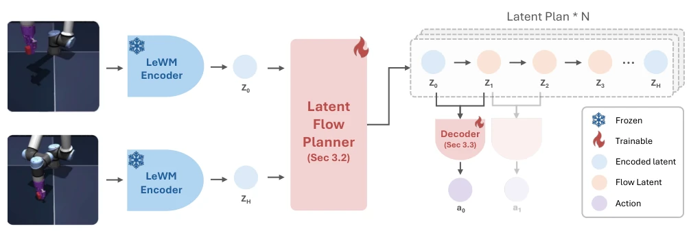
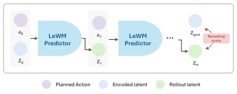
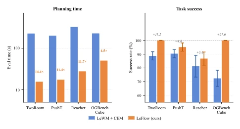
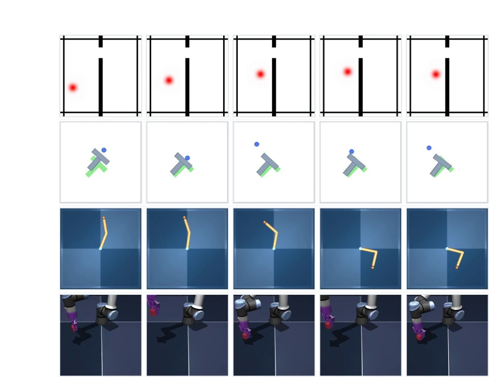

这篇论文给 latent world model 的规划环节来了个“降本增效”的大手术。LeFlow 把原本每次都要重新算的 CEM 优化，换成了离线学好的 latent trajectory prior，直接生成潜在路径再解码动作。效果确实猛，速度提升一个数量级，成功率还涨了。但话说回来，这招本质上是把在线搜索的开销挪到了离线训练，而且强依赖 LeWM 这个冻结 backbone 的几何结构。如果 backbone 本身规划能力不行，flow 模型也救不了。另外，长 horizon 表现崩盘，说明这玩意儿目前还是“短跑冠军”，离长程任务规划还有距离。不过对于需要实时响应的具身智能，这效率提升确实香，算是给黑盒搜索时代画了个句号，但也暴露了生成式规划在长程一致性上的短板。
This paper performs a major overhaul on the planning stage of latent world models to reduce costs and increase efficiency. LeFlow replaces the CEM optimization that requires recalculation each time with an offline-learned latent trajectory prior, directly generating latent paths before decoding actions. The results are indeed impressive, with speed improved by an order of magnitude and success rates also increasing. However, essentially, this approach shifts the online search overhead to offline training and heavily relies on the geometric structure of this frozen LeWM backbone. If the backbone itself lacks planning capability, the flow model cannot save the situation. Additionally, long-horizon performance collapses, indicating that this method is currently a "sprint champion" and still has a way to go for long-horizon task planning. However, for embodied intelligence requiring real-time response, this efficiency improvement is indeed significant, marking the end of the black-box search era, but also exposing the shortcomings of generative planning in long-horizon consistency.
研究动机Motivation
现有的 latent world models (如 LeWM [18]) 虽然预测能力强，但规划时仍依赖在线轨迹优化。每次状态 - 目标对都要从头运行迭代优化器（如 CEM [24]），把世界模型当黑盒模拟器，导致每次 replanning 都要付出完整的优化成本，且无法复用之前的规划经验。这种在线搜索不仅计算昂贵，还忽略了 latent space 本身已有的动力学结构。LeFlow 试图证明规划本身可以被 amortize，一旦 latent world model 学会，规划知识应能沉淀为可复用的 prior，而非每次重新求解。这解决了重复计算的问题，让规划从“每次重算”变成“一次学会，多次复用”，释放了 latent space 的几何结构潜力。
Existing latent world models (such as LeWM [18]), while possessing strong prediction capabilities, still rely on online trajectory optimization during planning. For every state-goal pair, an iterative optimizer (such as CEM [24]) must be run from scratch, treating the world model as a black-box simulator, which results in paying the full optimization cost for every replanning and prevents reusing previous planning experience. This online search is not only computationally expensive but also ignores the inherent dynamics structure of the latent space itself. LeFlow attempts to demonstrate that planning itself can be amortized; once a latent world model learns, planning knowledge should settle into a reusable prior rather than being re-solved each time. This solves the problem of repeated calculations, transforming planning from "re-calculate every time" to "learn once, reuse multiple times," thereby releasing the potential of the latent space's geometric structure.
The overall LeFlow framework is based on a frozen LeWM backbone and includes three trainable modules. First is the Rectified-flow latent planner, which receives current and target latent embeddings, generates internal states of the latent path between them, and utilizes Flow Matching to learn smooth trajectory distributions rather than generating actions directly. Second is the Inverse dynamics decoder, which converts adjacent latent states back into action blocks, separating high-level planning from low-level control. Finally is the Rollout reranking, where since generated paths may be unreachable, an autoregressive rollout is performed via the frozen LeWM predictor, and candidate paths are re-sorted based on the distance between the actual terminal latent and the target to ensure dynamic feasibility. During training, flow loss, inverse dynamics loss, and consistency loss are jointly optimized; the latter ensures generated paths conform to world model dynamics, preventing the generation of uncontrollable trajectories.

Figure 2. LeFlow architecture. A frozen LeWM encoder maps the current and goal observations to latent anchors zstart and zgoal. A conditional rectified-flow planner generates the interior of a latent path between them; an inverse dynamics decoder converts each latent transition into an action chunk. Only the flow planner and inverse dynamics decoder are trained; LeWM encoder is frozen throughout.

Figure 3. Rollout reranking projects generative proposals onto the controllable latent manifold. The flow model samples N candidate latent paths (dashed) with endpoints clamped to zstart and zgoal, but generated interiors may pass through latent states unreachable by any admissible action sequence. Each candidate is decoded into actions and rolled out autoregressively through the frozen LeWM predictor (solid), producing an actual terminal latent ˆz(i) H . Candidates are ranked by rollout distance to the goal (Eq. 5); the best is executed. This step grounds amortized proposals in the predictor’s dynamics without modifying the flow model.
Evaluated on four goal-conditioned pixel-control benchmarks (TwoRoom, PushT, Reacher, OGBench-Cube). Comparison baselines include LeWM+CEM and other offline RL methods. Main results show that, while maintaining a frozen backbone, LeFlow reduces planning time by approximately an order of magnitude (e.g., 14.4x on TwoRoom) and generally improves success rates (e.g., +26.7% on OGBench-Cube). Ablation studies indicate that planning in latent space is superior to direct action generation, generative modeling outperforms deterministic regression, and rollout reranking is crucial for dynamic feasibility. Long-horizon experiments show performance decreases significantly as the horizon increases, revealing the limitations of the current method in long-horizon planning. Additionally, performance remains stable on held-out tasks, demonstrating that the model has not overfitted to specific trajectories.

Figure 1. LeFlow plans an order of magnitude faster than CEM at better success. End-to-end evaluation time (left) and success rate (right) for LeWM+CEM and LeFlow under the same protocol (H=5, 50 episodes). Replacing online black-box search with an amortized latent trajectory prior removes the per-step optimization loop while preserving task performance.

Figure 4. LeFlow rollout visualizations. Each row shows a single successful episode: start observation (left) through intermediate executed steps to goal achievement (right). Across navigation (TwoRoom), pushing (PushT), reaching (Reacher), and 3D manipulation (OGBench-Cube), LeFlow produces consistent, goal-directed behavior.